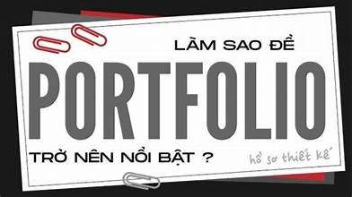

1 — Portfolio cá nhân
Mô tả: Trang tĩnh giới thiệu bản thân, danh mục dự án, liên hệ. Đã deploy lên GitHub Pages.
Công nghệ: HTML, CSS (Flexbox, Grid), GitHub Pages
Bài học: Quản lý repository, cấu trúc folder hợp lý, tối ưu ảnh, metadata cho SEO.
